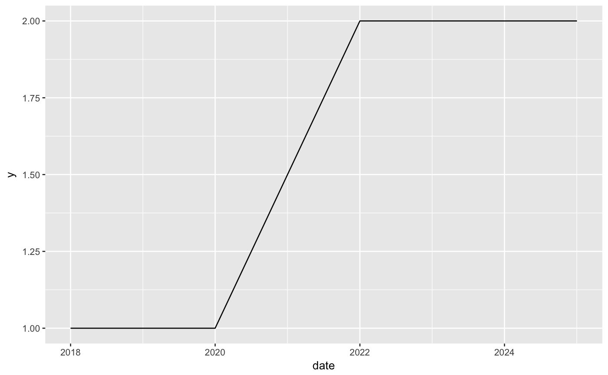
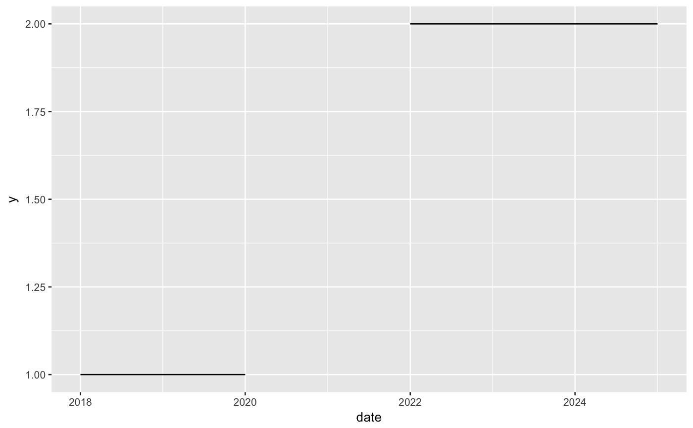

For correctly plotting country-time period spells
id_date_sequence(x, pd)
| x | a Date sequence |
|---|---|
| pd | what is the time aggregation period in the data? |
library("ggplot2") d1 <- as.Date("2018-01-01") d2 <- as.Date("2025-01-01") seq1 <- seq(d1, d2, by = "year") data.frame(seq1, id=id_date_sequence(seq1, "year"))#> seq1 id #> 1 2018-01-01 1 #> 2 2019-01-01 1 #> 3 2020-01-01 1 #> 4 2021-01-01 1 #> 5 2022-01-01 1 #> 6 2023-01-01 1 #> 7 2024-01-01 1 #> 8 2025-01-01 1# With a gap, should be two ids df <- data.frame(date = seq1[-4], id=id_date_sequence(seq1[-4], "year"), cowcode = 999) df#> date id cowcode #> 1 2018-01-01 1 999 #> 2 2019-01-01 1 999 #> 3 2020-01-01 1 999 #> 4 2022-01-01 2 999 #> 5 2023-01-01 2 999 #> 6 2024-01-01 2 999 #> 7 2025-01-01 2 999# The point is to plot countries with interrupted independence correctly: df$y <- c(rep(1, 3), rep(2, 4)) df$id <- paste0(df$cowcode, df$id) df#> date id cowcode y #> 1 2018-01-01 9991 999 1 #> 2 2019-01-01 9991 999 1 #> 3 2020-01-01 9991 999 1 #> 4 2022-01-01 9992 999 2 #> 5 2023-01-01 9992 999 2 #> 6 2024-01-01 9992 999 2 #> 7 2025-01-01 9992 999 2